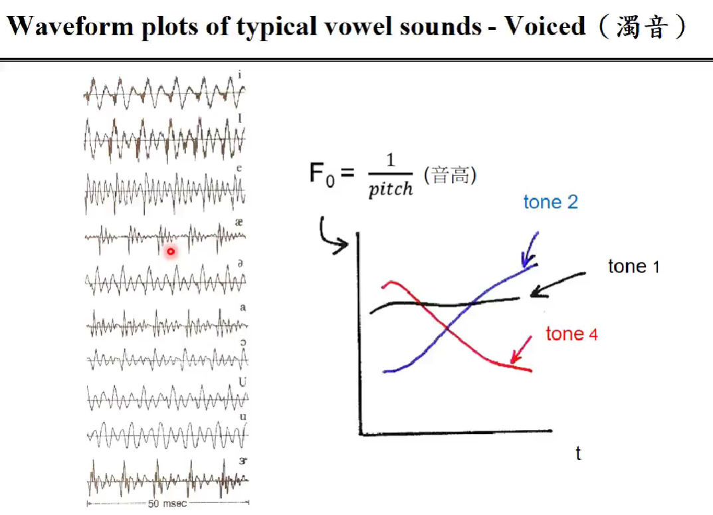
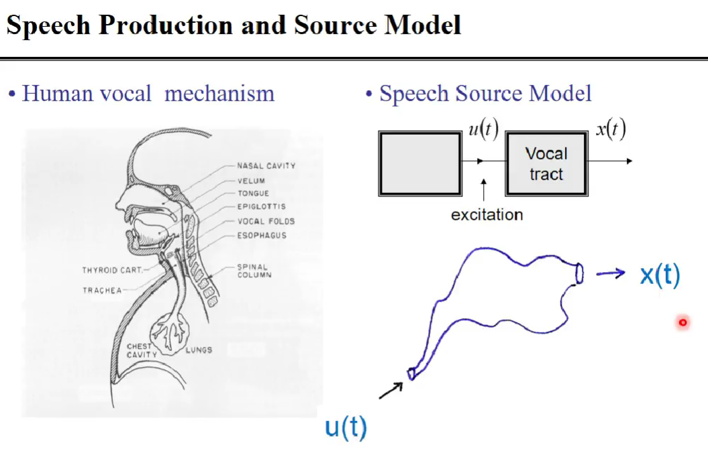

Acoustic Feature
- 把一个声音讯号变成一个vector（frame）
https://zhuanlan.zhihu.com/p/102413549
 - u(t)：由肺部的气管进入口腔的气（excitation），出来的声音x(t)，中间经过了唇齿舌
- vocal tract：声道，看成一个系统
-
u是气，有两种，周期的或非周期的
-
在口腔处，有声带，会震动
-
在voiced一行，前面一个信号经过唇齿舌，会变成后面一个
-
每一股气产生一个峰
-
声带振动，麻的，是有周期的（voiced，浊音）
- 清音 声带不震动，气一直出来，像random noise
- smoothly从一个transition到另一个
-
的实部是
-
X[k] 轴上的每一个点对应的是一个基向量 之类的 ，相当于 之类的
-
也可以看成X[k]每一点对应的值告诉我们每一个 前面的系数 和相位
-
所以说时域上的卷积是频域上的乘积
- 底下是频域上
- 高高低低上面长了一堆毛，浊音上这些毛是有周期的，清音上这些毛是没有周期的
- 把u(t)（激励）做傅里叶变换，就是一堆有/无周期的毛，有周期的毛就是声带有振动；没有周期的毛就是声带没有振动
- 不同口型（唇齿舌）构成u(t)和x(t)中间的那个方框（vocal tract/声道），构成的是高高低低的变化（包络线），决定是a/u/o…
- 去找这些高高低低包络线的peak（共振峰），这些共振峰决定了是什么声音
- 母音的formant structure基本上是由上到下
- 是基频/音高
- g(t)是声道，对气流造成不同的影响
- 毛只是那些气，提供的是音高F0，音高是根据毛的周期而来
- 四条白线是四个共振峰频率的变化
- 实际中声音讯号变化很快，像上面第一张图，需要很多bit来描述；实际上唇齿舌的变化很慢，像上面的第二张图
- 浊音要知道周期是多少，清音就是产生random noise
- 浊音高音比较低，但是浊音占的比较多
- 声音在一小段中才有稳定性
- 现在时间轴上是相乘，频域上是卷积（和刚才反过来）
-
main lode主瓣会把信号抹开来（因为做的是卷积）
-
旁瓣会把信号每一个频率和其他频率混在一起
- 其实主瓣抹开一点也可以，因为人的听觉没有那么精细
- J=12/13
- 再取一个log只因为人耳感知能量而是相对的，并且把大的变化压小，小的放大
- 绝对值平方就是把相位丢掉
- 很多实验表明把phase相位丢掉，人耳也能听
- g是口型，在时域上是卷积，但在频域上是乘积，取log变相加

- 逆傅里叶变换出来的系数高度不相关

- 取前面13个主要是因为比较像是口型的，后面几个比较像是毛
- 逆傅里叶变换就是把excitation（毛）的影响清掉

- 把纵轴每个维度做线性回归，斜率当成一阶微分
- 把声音传到云端，实际上可以看成把声音做一个convolution
- MFCC转到频域，取log，相乘变相加，复杂的东西从convolution变成相加，在够短的时间内变化不大。加了之后取微分和不加是一样的
- 所以动态特性可以消除convolution noise
- 39维，在传送中可能会被破坏的是前面13维，后面是微分，不容易破坏
- 5. 端点检测：从一段语音信号中准确地找出语音信号的起始点和结束点，它的目的是为了使有效的语音信号和无用的噪声信号得以分离。对于一些公共的语音数据集可以不做这步操作，因为这些语音的内容就是有效的语音信号（可以认为研究人员已经对数据做过端点检测）。
本博客所有文章除特别声明外，均采用 CC BY-NC-SA 4.0 许可协议。转载请注明来自 Seline's blog！